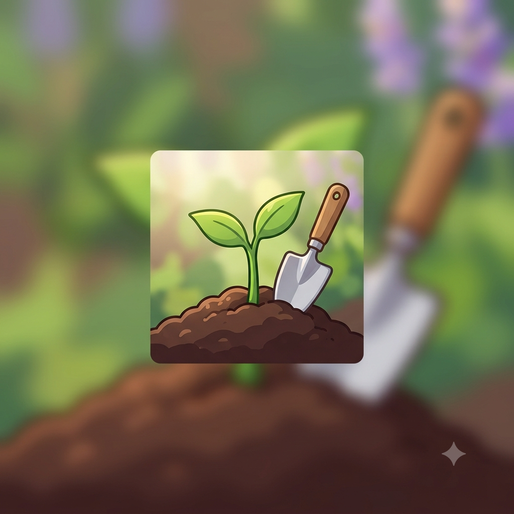

Boas-vindas ao nosso blog!
Por: Ketelyn Naiara Daluz Dias da Silva
Sejam bem-vindos! Aqui vou registrar todos os passos, descobertas e desafios da nossa turma 1D na criação da horta escolar no Colégio CQC.
Acompanhe nosso aprendizado e a evolução do nosso espaço verde no Colégio CQC!

Por: Ketelyn Naiara Daluz Dias da Silva
Sejam bem-vindos! Aqui vou registrar todos os passos, descobertas e desafios da nossa turma 1D na criação da horta escolar no Colégio CQC.

Por: Ketelyn Naiara Daluz Dias da Silva
Nossa primeira ida a campo! No dia 31/07/2026, nos reunimos para medir e demarcar o local original da nossa horta no colégio.

Por: Ketelyn Naiara Daluz Dias da Silva
No dia 21/08/2026, precisávamos escolher outro local para a horta. Descobrimos que o muro dos fundos do colégio está condenado, então tivemos que nos replanejar e encontrar um novo espaço seguro!

Por: Ketelyn Naiara Daluz Dias da Silva
Novas atualizações sobre o preparo do novo solo e o plantio das primeiras sementes estarão disponíveis aqui em breve!

Por: Ketelyn Naiara Daluz Dias da Silva
Acompanhe em breve a nossa rotina de rega, cuidados diários e acompanhamento de crescimento das mudas.

Por: Ketelyn Naiara Daluz Dias da Silva
Em breve compartilharemos o resultado final da nossa primeira colheita e os aprendizados da turma do 1D!